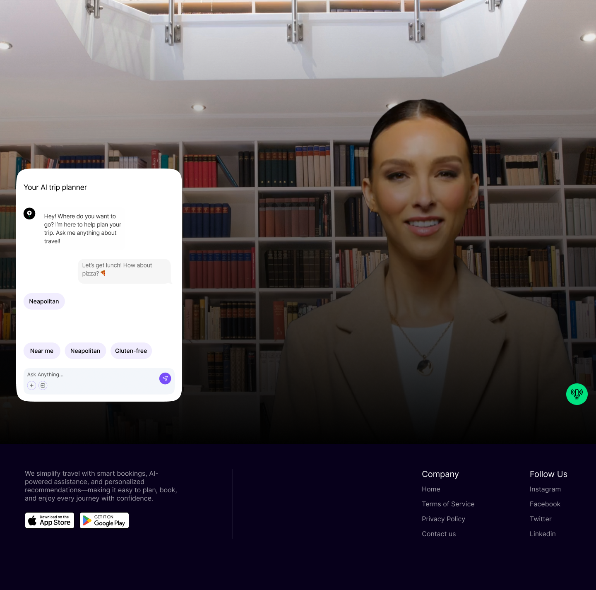

Applied AI · Senior-level execution · Direct collaboration
AI, built for execution.
RBX Labs turns AI into real products, workflows, and go-to-market systems that create measurable business value.
Most teams do not need more AI ideas. They need AI that ships, gets adopted, and improves how the business operates. RBX Labs focuses on practical execution over experimentation for its own sake.
Applied AI. Senior-level execution. Direct collaboration.
Mission
Move AI from experimentation into execution
TravelTech venture
98%+ valid itineraries,
12s P95 pipeline
Impact
The work has shown up in systems, metrics, and team adoption
Across every engagement, the goal is the same: measurable outcomes that teams can point to and build on.
Clarify
Design
Enable
What RBX Labs builds
RBX Labs helps companies apply AI where it matters most: product, operations, and go-to-market execution.
Build AI-powered products that solve real business problems
Design and build AI product experiences, internal tools, and customer-facing systems that teams can actually ship and use.
The focus stays on practical value, adoption, and measurable outcomes rather than feature theatre.
Create workflows that improve how the business operates
Build operational workflows that reduce manual work, improve speed, and help teams operate more effectively.
The outcome is a usable system that fits real constraints and can be owned by the team after delivery.
Build AI-enabled execution across the funnel
Create systems for research, content, outreach, qualification, and sales support so go-to-market execution gets faster and sharper.
The goal is not to experiment with AI. The goal is to put it to work.
Why RBX Labs
RBX Labs works with teams that want clarity, speed, and outcomes. The focus is on building useful systems, accelerating adoption, and turning AI into something the business can actually use.
AI products, workflows, and go-to-market systems are built around real operating needs, not abstract strategy.
The work is designed to get used, not just presented. Teams leave with systems they can actually run.
The emphasis stays on measurable business value, faster execution, and systems that create leverage.
Contact
Let's build something useful
If your team is serious about using AI to improve product, operations, or go-to-market execution, RBX Labs can help turn that ambition into working systems.
Start a conversation about the product, workflow, or execution system you want to make real.
Case studies · Operator-led systems
RBX Labs also builds and ships products directly. These are examples of the systems thinking and execution depth behind the work.

AI travel concierge
TravelTech venture
Architected an AI-powered travel flow for a TravelTech venture across planning, booking, and concierge support.
The work focused on connecting itinerary generation, decision support, and avatar-led travel help into one traveler experience that stayed useful before and during the trip.
98%+
Valid itineraries
12s
P95 pipeline
Planning + concierge UX
removed product
Built and shipped a first version in 30 days for pre-connection Wi-Fi trust and safety scoring.
It is both an internal venture and proof of how RBX Labs takes an idea from framing to working product fast.
iPRD
Interactive PRD generation system that turns rough product thinking into executable specs in Canvas.
Built to be deterministic, single-file, deployment-ready, and useful to teams beyond the first demo.
Kampd
Built AI-powered trust, discovery, and moderation systems across a fast-growing community product.
Included real-time trust scoring, feed ranking, and policy-driven workflows that reduced manual review while improving relevance.